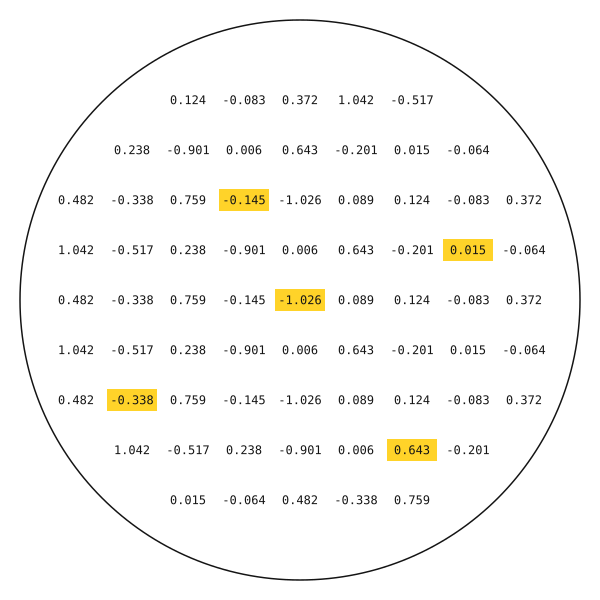

A frozen transformer. Two writable matrices. Explore how a change in weights can redirect an answer.
77,568 frozen parameters2,048 memory weights100% in your browser

Loading the frozen model…
Change the answer. Watch what stays fixed.
This is a trained question-and-answer model that produces one-word answers within a small domain: capitals, largest cities, and animal categories. It is not a general chatbot. Begin with the Texas example below.
01A / ASK THE MODEL
Frozen model—
With memory—
Run a question to inspect the memory gate.
See the 16 matching scores
01B / WRITE A MEMORY
A new association, without retraining.
Write an answer for the question on the left. The writer uses a hidden state that the frozen model already decodes as your chosen answer.
Try Sacramento, then run the Texas question again. Ask “Are all cats black?” to test whether the edit stays selective. This is an intentional override, not a correction to the real-world capital.
The memory is the numbers.
Each row is one of 16 slots. Select a matrix and slot, then edit any of its 64 weights. These columns represent hidden features, not vocabulary tokens.
Bulk row editing and scaling
Keep or share an experiment
Memory saves locally in this browser on this site. It is not shared with other visitors. Export a JSON file to move it to another browser. No questions are sent to a server.
Follow the signal.
All shapes below describe one question. T is its token count, including <bos> and <answer>. “What is the capital of Texas?” has T = 9. The browser runs the actual trained transformer, not a question-to-answer lookup table.
Fifty-eight tokens. A deliberately small world.
The tokenizer lowercases text and recognizes letter sequences, question marks, and periods. Unknown words become <unk>; other characters are ignored. The limit is 46 question tokens plus two special tokens. Output is one token.